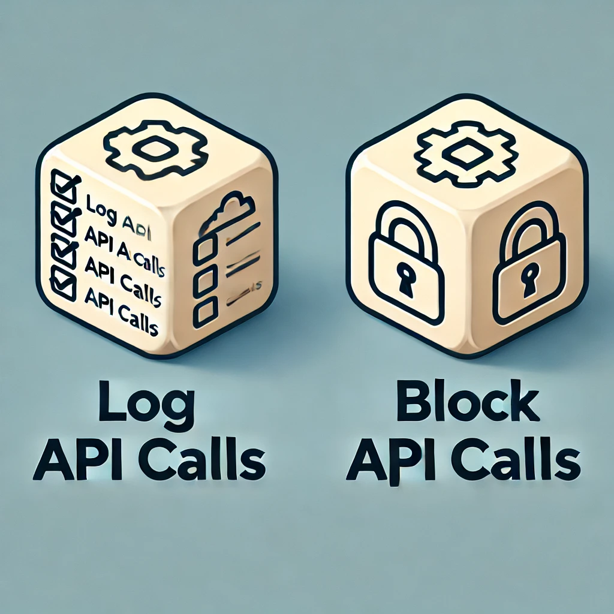
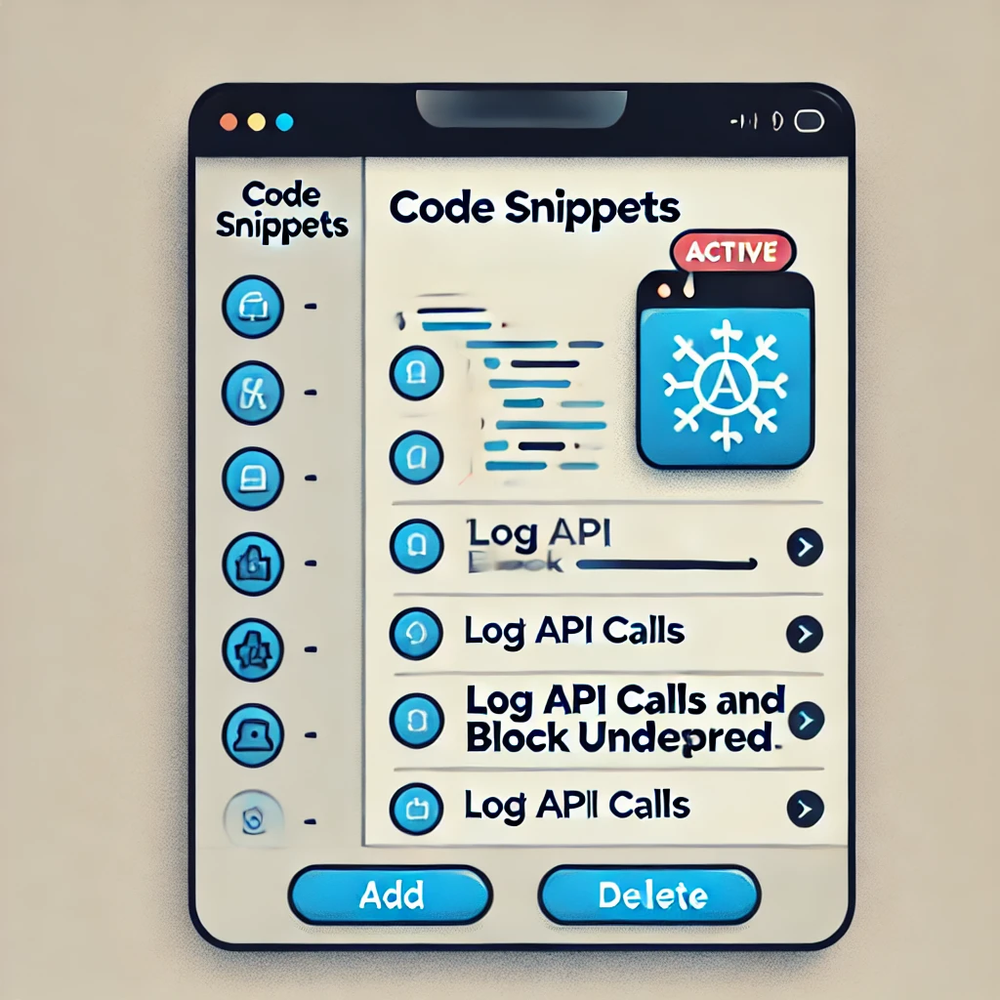
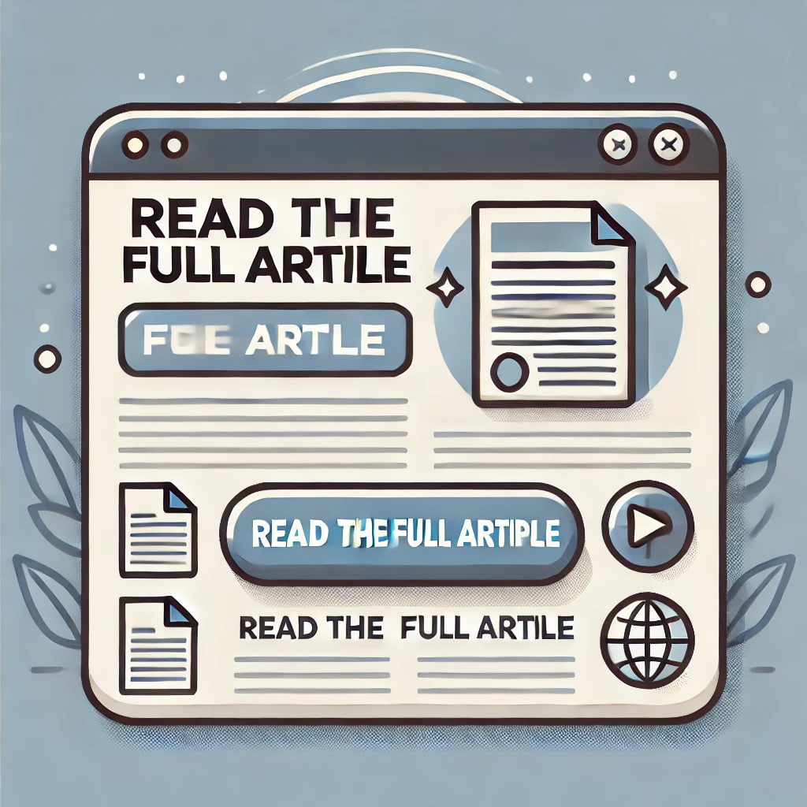

Monitor and Block API Calls in WordPress to Improve Security and Performance
A Guide for Developers and Site Managers

Why Monitor API Calls?
Unmonitored API calls can slow down the site and compromise security.
- Reduce the risk of unauthorized access
- Gain more control and insight into API calls
- Optimize performance
Implementation Goals
Log all API calls
Block calls to unwanted domains
The goal is to create a system that logs each API call and blocks calls from domains we want to restrict.
Code to Intercept and Block API Calls
// Example code for the pre_http_request filter
add_filter('pre_http_request', 'intercept_and_block_api', 10, 3);
function intercept_and_block_api($pre, $args, $url) {
// Logic to block unwanted domains and log API calls
}

Creating the api_logs Table
Structure of the api_logs table:
idurlstatus(allowed/blocked)timestamp

Using the Code Snippets Plugin
Insert, edit, and activate code snippets directly from the WordPress backend.
Benefits of Implementation
Local Development
- Advanced debugging
- API call optimization
Production
- Enhanced security
- Optimized performance
- Regulatory compliance
Extensions and Possible Improvements
- Admin interface for viewing logs
- Real-time notifications for blocked calls
- Dynamic configuration of blocked domains
Final Tips for Security and Performance
- Perform regular database backups
- Monitor database impact
- Optimize the log table for performance
Take Control of API Calls on Your WordPress Site!
Read the full article for technical details and code!
Visit the article 